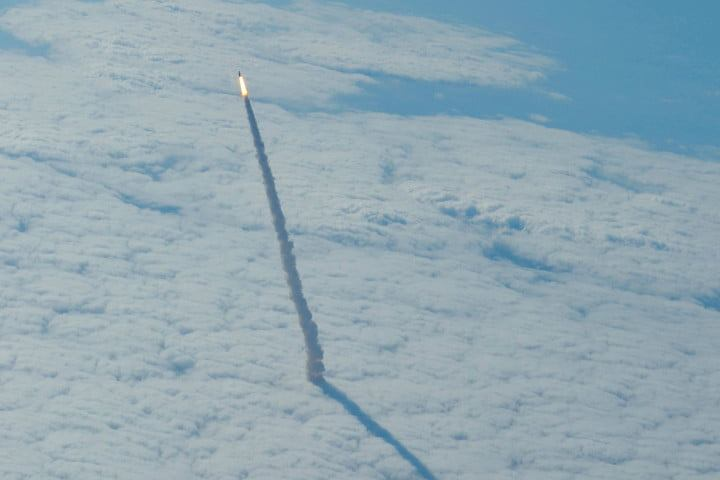

IN ACTUALITY, ONE OF THE BIGGEST CHALLENGES TO SPACE TRAVEL IS SIMPLY HAULING AND OBTAINING FUEL.
HOWEVER, THE PHOTON REACTOR MAKES ITS OWN FUEL!

The Wenbert Team, now working with RP&L, determined the Cl2/H2 [+hv] reaction to
represent a Specific Impulse of 1816 seconds in unoptimized systems. This
compares to 456 seconds for LOX/H2 in the Space Shuttle Main Engine.
In reality, a well designed photokinetic rocket engine delivers an even higher Isp.
For one thing, the reaction kinetics are proportional (but not linear) to the input energy,
so increasing input energy results in even larger increases in kinetic output,
which would be reflected in Isp. But being 3-4x times more efficient than Oxygen based systems
doesn't tell the whole story, because the less propellant you need (to push).
So the practical result is that in the same sized vehicle (i.e. SpaceX Starship),
a Photon Engine could reduce the transit time from Earth to Mars from months to days!